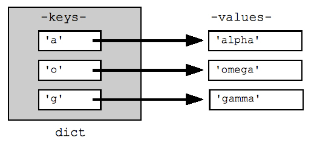

for loop:
for number in range(10):
total = total + (number + 1)
total variable.
| time | count |
|---|---|
| 60 | 10000 |
| 90 | 25587 |
| 120 | 76327 |
| 150 | 212715 |
| 180 | 619511 |
| 210 | 1940838 |
| 240 | 4240760 |
| 270 | 13993730 |
| 300 | 38971086 |
| 330 | 105614040 |
Figure 1: Data structure concept of a dictionary in python. From [3].
